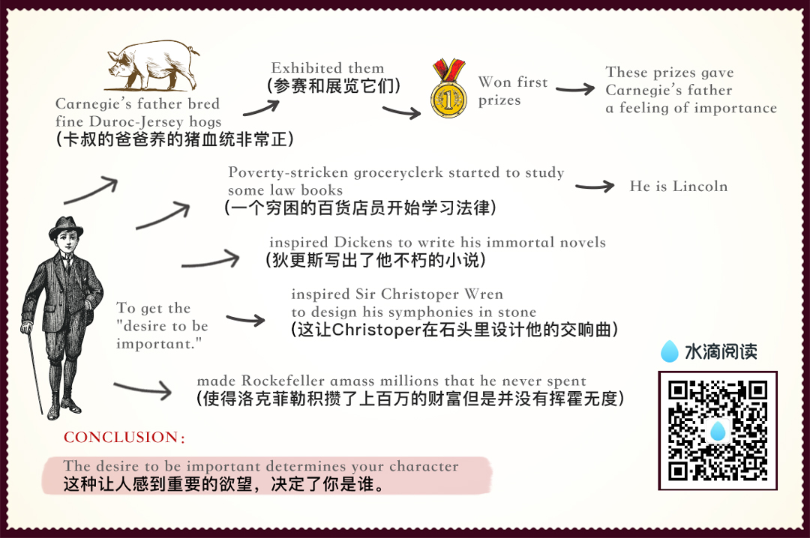

chapter2.1
There is only one way under high heaven to get anybody to do anything.

Did you ever stop to think of that?
Yes, just one way.
And that is by making the other person want to do it.
Remember, there is no other way.
Of course, you can make someone want to give you his watch by sticking a revolver in his ribs.
You can make your employees give you cooperation—until your back is turned—by threatening to fire them.
You can make a child do what you want it to do by a whip or a threat.
But these crude methods have sharply undesirable repercussions.
The only way I can get you to do anything is by giving you what you want. What do you want?
Sigmund Freud said that everything you and I do springs from two motives: the sex urge and the desire to be great.
John Dewey, one of America's mostprofound philosophers, phrased it a bit differently.
Dr. Dewey said that the deepest urge in human nature is "the desire to be important."
Remember that phrase: "the desire to be important." It is significant.
You are going to hear a lot about it in this book.
What do you want?
Not many things, but the few that you do wish, you crave with an insistence that will not be denied.
Some of the things most people want include:
Health and the preservation of life.
Food.
- Sleep.
Money and thethings money will buy.
Life in the hereafter.
Sexual gratification.
The well-being of our children.
A feeling of importance.
Almost all these wants are usually gratified all except one.
But there is one longing—almost as deep, almost as imperious, as the desire for food or sleep—which is seldom gratified.
It is what Freud calls "the desire to be great."
It is what Dewey calls the "desire tobe important."
Lincoln once began a letter saying: "Everybody likes a compliment."
William James said: "The deepest principle in human nature is the craving to be appreciated."
He didn't speak, mind you, of the "wish" or the "desire" or the "longing" to be appreciated.
He said the "craving" to be appreciated.
Here is a gnawing and unfaltering human hunger, and the rare individual who honestly satisfies thisheart hunger will hold people in the palm of his or her hand and "even the undertaker will be sorry when he dies."
The desire for a feeling of importance is one of the chief distinguishing differences between mankind and the animals.
To illustrate: When I was a farm boyout in Missouri, my father bred fine Duroc-Jersey hogs and pedigreed white-faced cattle.
We used to exhibit our hogs and white-faced cattle at the country fairs and livestock shows throughoutthe Middle West.
He won first prizes by the score.
My father pinned his blue ribbons on a sheet of white muslin, and when friends or visitors came to the house, he would get out the long sheet of muslin.
He would hold one end and I would hold the other while he exhibited theblue ribbons.
The hogs didn't care about the ribbons they had won.
But Father did.
These prizes gave him a feeling of importance.
If our ancestors hadn't had this flaming urge for a feeling of importance, civilization would have been impossible.
Without it, we should have been justabout like animals.
It was this desire for a feeling of importance that led an uneducated, poverty-stricken grocery clerk to study some law books he found in the bottom of a barrel of household plunder that he had bought for fifty cents.
You have probably heard of this grocery clerk.
His name was Lincoln.
It was this desire for a feeling of importance that inspired Dickens to write his immortal novels.
This desire inspired Sir Christoper Wren to design his symphonies in stone.
This desire made Rockefeller amassmillions that he never spent!
And this same desire made the richest family in your town build a house far too large for its requirements.
This desire makes you want to wearthe latest styles, drive the latest cars, and talk about your brilliant children.
It is this desire that lures many boysand girls into joining gangs and engaging in criminal activities.
The average young criminal, according to E. P. Mulrooney, onetime police commissioner of New York, is filled with ego, and hisfirst request after arrest is for those lurid newspapers that make him out a hero.
The disagreeable prospect of serving time seems remote so long as he can gloat over his likeness sharing space with pictures of sports figures, movie and TV stars and politicians.
If you tell me how you get your feeling of importance, I'll tell you what you are.
That determines your character.
That is the most significant thing about you.
For example, John D. Rockefeller got his feeling of importance by giving money to erect a modern hospital in Peking, China, to care for millions of poor people whom hehad never seen and never would see.
Dillinger, on the other hand, got his feeling of importance by being a bandit, a bank robber and killer.
When the FBI agents were hunting him, he dashed into a farmhouse upin Minnesota and said, "I'm Dillinger!"
He was proud of the fact that he was Public Enemy Number One.
"I'm not going to hurt you, but I'm Dillinger!" he said.
Yes, the one significant difference between Dillinger and Rockefeller is how they got their feeling of importance.
History sparkles with amusing examples of famous people struggling for a feeling of importance.
Even George Washington wanted tobe called "His Mightiness, the President of the United States"; and Columbus pleaded for the title "Admiral of the Ocean and Viceroy of India."
Catherine the Great refused to openletters that were not addressed to "Her Imperial Majesty";
and Mrs. Lincoln, in the White House, turned upon Mrs. Grant like a tigress and shouted, "How dare you be seated in my presence until I invite you!"
Our millionaires helped finance Admiral Byrd's expedition to the Antarctic in 1928 with the understanding that ranges of icy mountains would be named after them;
and Victor Hugo aspired to have nothing less than the city of Paris renamed in his honor.